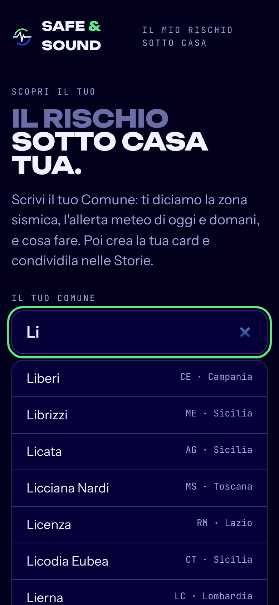
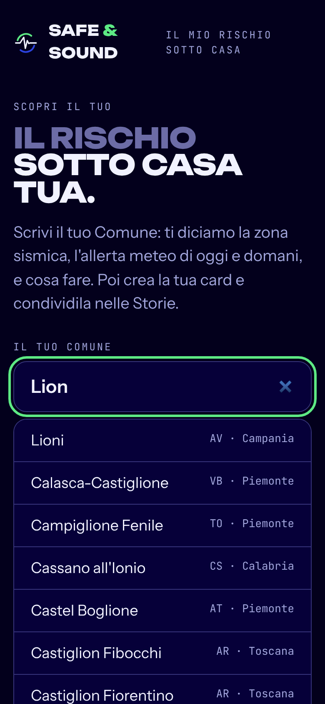

23.11.1980 · audio originale
19:33:56
un minuto.
Una radio sta
registrando.
registrando.
🔊 Alza il volume.
L'Italia
non era
pronta.
non era
pronta.
23.11.1980 · ore 19:34
Irpinia e
Basilicata
Basilicata
Magnitudo 6.9
fonte: INGV
2.734
vittime.
8.848 feriti.
Oltre 400.000
sfollati.
Oltre 400.000
sfollati.
fonte: Dipartimento della Protezione Civile
I soccorsi
arrivano.
arrivano.
Nessuno
li coordina.
dopo tre giorni di confusione
arriva un commissario:
Giuseppe
Zamberletti.
Zamberletti.
Da lì nasce la
protezione
civile.
protezione
civile.
1982il Dipartimento
1992il Servizio nazionale
oggii volontari sono
dentro il sistema
dentro il sistema
Il sistema c'è.
Il primo anello
sei tu.
Il primo anello
sei tu.







Sai dov'è
l'area di attesa
del tuo Comune?
l'area di attesa
del tuo Comune?
Cercala stasera.
Mandalo a chi vive con te.
Mandalo a chi vive con te.
una rubrica diFormazione
e Sicurezza
e Sicurezza
SAFE & SOUNDAccadde oggi · 23.11